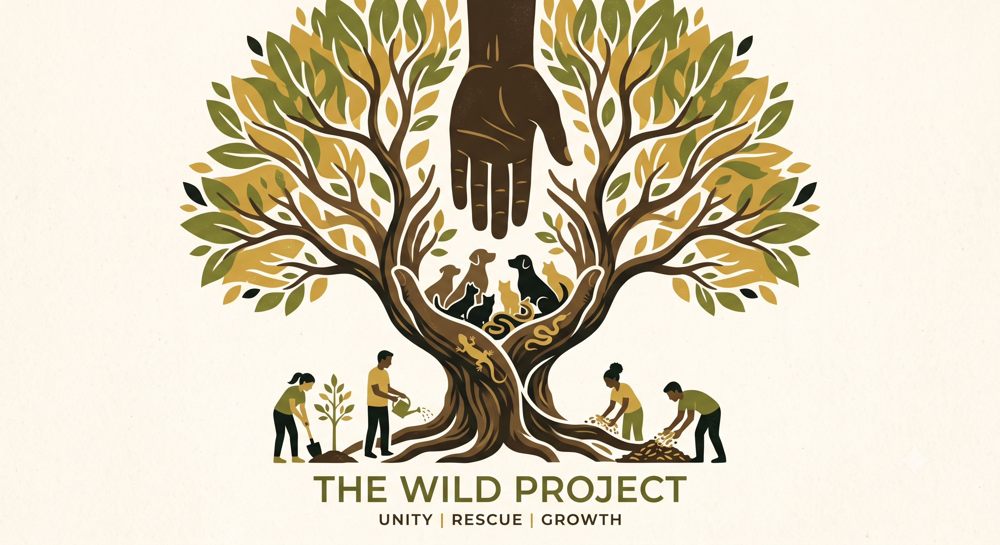
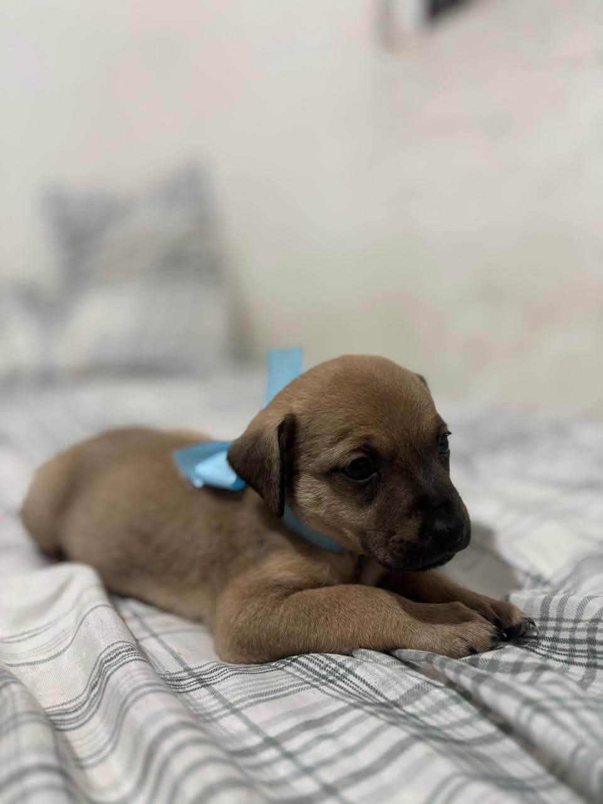
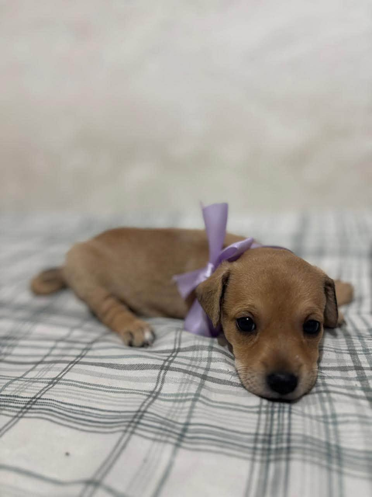
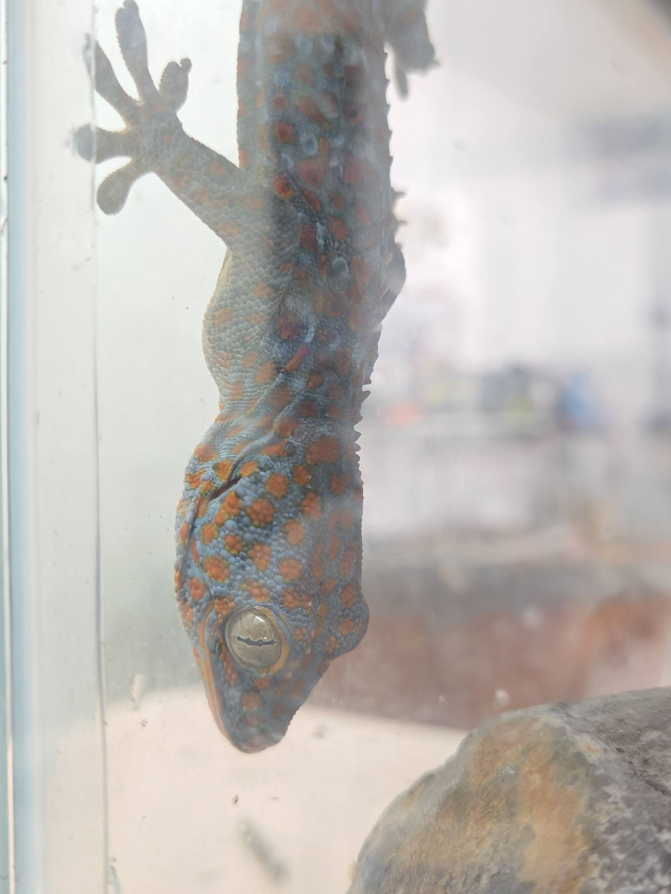
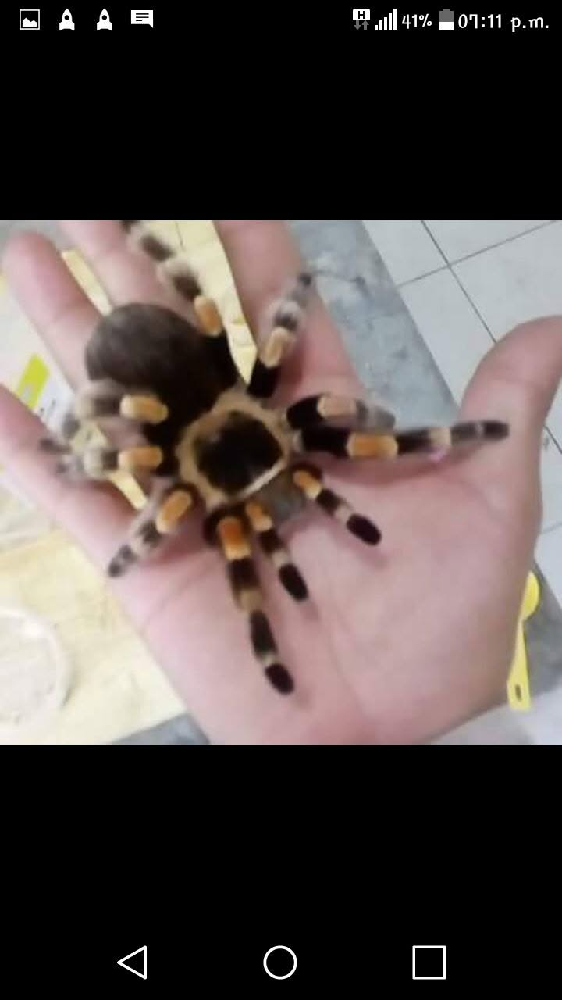

Rescate sin excepciones
Atendemos a perros, gatos y animales exóticos domésticos que sufren por abandono o desinformación. Ningún animal queda fuera.
The Wild Project nació de una convicción profunda: todos los animales domésticos —sin importar si caminan con cuatro patas, si tienen plumas o si habitan en un terrario— merecen vivir con dignidad, respeto y los cuidados adecuados.
Nos especializamos en rescatar, rehabilitar y reubicar de forma responsable a perros, gatos y especies exóticas que, por diversas razones, perdieron su hogar o nunca contaron con el cuidado que merecían.
Creemos que la tenencia responsable comienza con la educación. Por eso, antes de cada adopción, capacitamos a los futuros dueños sobre las necesidades específicas de su nuevo compañero de vida.
Sumate como voluntario
Cinco años de rescate, amor y transformación.
Wild Project nació como un proyecto personal de rescate en Zapopan, Jal. Los primeros animales rescatados fueron tres perros abandonados y un gecko.
Se incorporaron los primeros 20 voluntarios y se realizó el primer evento de adopción masiva con más de 40 animales encontrando hogar en un solo día.
Lanzamos el programa de rehabilitación de fauna exótica doméstica, siendo pioneros en Argentina en el rescate y adopción responsable de reptiles y arácnidos.
Iniciamos el programa de educación ambiental en escuelas, concientizando sobre el impacto de los animales domésticos en el ecosistema local.
Lanzamos nuestra plataforma web institucional para ampliar nuestro alcance y facilitar el proceso de adopción responsable a todo el país.
Los pilares que guían cada rescate, rehabilitación y adopción.
Atendemos a perros, gatos y animales exóticos domésticos que sufren por abandono o desinformación. Ningún animal queda fuera.
Capacitamos a cada adoptante sobre el hábitat, la dieta y las necesidades médicas específicas de su nuevo compañero.
Trabajamos bajo estrictos estándares de bienestar animal, garantizando transiciones seguras para el animal y la familia.
Construimos redes de voluntarios, adoptantes y colaboradores comprometidos con el bienestar animal y la ecología.
Voluntarios comprometidos que hacen posible cada rescate.

Fundadora & Veterinaria

Coord. de Adopciones

Especialista en Exóticos

Educación Ambiental
Hasta que no hayas amado a un animal, una parte de tu alma permanecerá dormida.— Anatole France